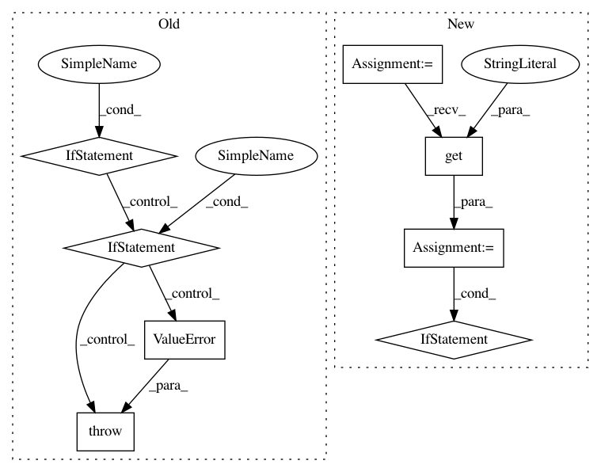

a902ddf5be91cb738efb1746847f74bb0f756ae2,prody/dynamics/perturb.py,,calcDynamicFlexibilityIndex,#Any#Any#Any#,137
Before Change
*Evol Appl.* **2013** 6(3):423-33.
if not isinstance(prs_matrix, np.ndarray):
raise TypeError("prs_matrix should be a numpy array")
if prs_matrix.ndim != 2:
raise ValueError("prs_matrix should be 2-dimensional")
if not isinstance(atoms, Atomic):
raise TypeError("atoms should be an Atomic object")
if not isinstance(select, (str, Selection)):
After Change
if not isinstance(atoms, Atomic):
raise TypeError("atoms should be an Atomic object")
norm = kwargs.get("norm", False)
if norm:
prs_matrix, _, _ = calcPerturbResponse(model, atoms=atoms, **kwargs)
else:
prs_matrix = model.getCovariance()
if not isinstance(select, (str, Selection)):
raise TypeError("select should be a Selection or selection string")
profiles = sliceAtomicData(prs_matrix, atoms, select, axis=0)
In pattern: SUPERPATTERN
Frequency: 3
Non-data size: 8
Instances
Project Name: prody/ProDy
Commit Name: a902ddf5be91cb738efb1746847f74bb0f756ae2
Time: 2021-02-01
Author: jamesmkrieger@gmail.com
File Name: prody/dynamics/perturb.py
Class Name:
Method Name: calcDynamicFlexibilityIndex
Project Name: stellargraph/stellargraph
Commit Name: bcf6d0a188ee9ba868c1de01c347f813e3aaa35c
Time: 2020-01-22
Author: andrew.docherty@data61.csiro.au
File Name: stellargraph/layer/graph_attention.py
Class Name: GAT
Method Name: __init__
Project Name: prody/ProDy
Commit Name: a902ddf5be91cb738efb1746847f74bb0f756ae2
Time: 2021-02-01
Author: jamesmkrieger@gmail.com
File Name: prody/dynamics/perturb.py
Class Name:
Method Name: calcDynamicCouplingIndex